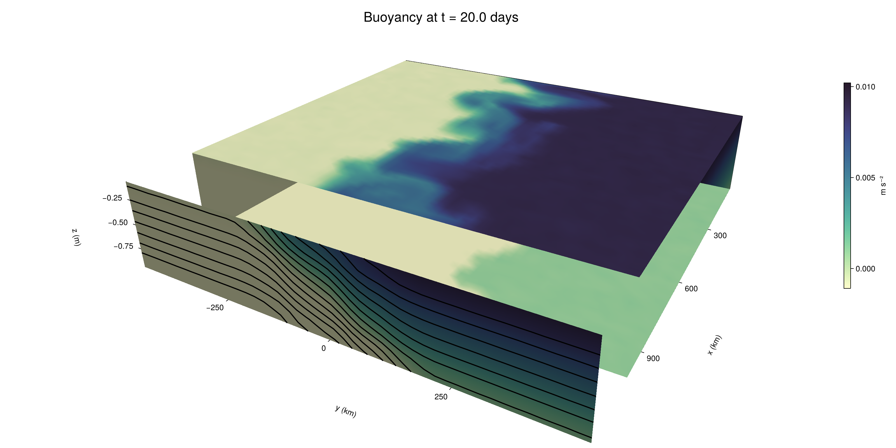

Baroclinic adjustment
In this example, we simulate the evolution and equilibration of a baroclinically unstable front.
Install dependencies
First let's make sure we have all required packages installed.
using Pkg
pkg"add Oceananigans, CairoMakie"using Oceananigans
using Oceananigans.UnitsGrid
We use a three-dimensional channel that is periodic in the x direction:
Lx = 1000kilometers # east-west extent [m]
Ly = 1000kilometers # north-south extent [m]
Lz = 1kilometers # depth [m]
grid = RectilinearGrid(size = (48, 48, 8),
x = (0, Lx),
y = (-Ly/2, Ly/2),
z = (-Lz, 0),
topology = (Periodic, Bounded, Bounded))48×48×8 RectilinearGrid{Float64, Periodic, Bounded, Bounded} on CPU with 3×3×3 halo
├── Periodic x ∈ [0.0, 1.0e6) regularly spaced with Δx=20833.3
├── Bounded y ∈ [-500000.0, 500000.0] regularly spaced with Δy=20833.3
└── Bounded z ∈ [-1000.0, 0.0] regularly spaced with Δz=125.0Model
We built a HydrostaticFreeSurfaceModel with an ImplicitFreeSurface solver. Regarding Coriolis, we use a beta-plane centered at 45° South.
model = HydrostaticFreeSurfaceModel(; grid,
coriolis = BetaPlane(latitude = -45),
buoyancy = BuoyancyTracer(),
tracers = :b,
momentum_advection = WENO(),
tracer_advection = WENO())HydrostaticFreeSurfaceModel{CPU, RectilinearGrid}(time = 0 seconds, iteration = 0)
├── grid: 48×48×8 RectilinearGrid{Float64, Periodic, Bounded, Bounded} on CPU with 3×3×3 halo
├── timestepper: QuasiAdamsBashforth2TimeStepper
├── tracers: b
├── closure: Nothing
├── buoyancy: BuoyancyTracer with ĝ = NegativeZDirection()
├── free surface: ImplicitFreeSurface with gravitational acceleration 9.80665 m s⁻²
│ └── solver: FFTImplicitFreeSurfaceSolver
├── advection scheme:
│ ├── momentum: WENO reconstruction order 5
│ └── b: WENO reconstruction order 5
└── coriolis: BetaPlane{Float64}We start our simulation from rest with a baroclinically unstable buoyancy distribution. We use ramp(y, Δy), defined below, to specify a front with width Δy and horizontal buoyancy gradient M². We impose the front on top of a vertical buoyancy gradient N² and a bit of noise.
"""
ramp(y, Δy)
Linear ramp from 0 to 1 between -Δy/2 and +Δy/2.
For example:
```
y < -Δy/2 => ramp = 0
-Δy/2 < y < -Δy/2 => ramp = y / Δy
y > Δy/2 => ramp = 1
```
"""
ramp(y, Δy) = min(max(0, y/Δy + 1/2), 1)
N² = 1e-5 # [s⁻²] buoyancy frequency / stratification
M² = 1e-7 # [s⁻²] horizontal buoyancy gradient
Δy = 100kilometers # width of the region of the front
Δb = Δy * M² # buoyancy jump associated with the front
ϵb = 1e-2 * Δb # noise amplitude
bᵢ(x, y, z) = N² * z + Δb * ramp(y, Δy) + ϵb * randn()
set!(model, b=bᵢ)Let's visualize the initial buoyancy distribution.
using CairoMakie
# Build coordinates with units of kilometers
x, y, z = 1e-3 .* nodes(grid, (Center(), Center(), Center()))
b = model.tracers.b
fig, ax, hm = heatmap(y, z, interior(b)[1, :, :],
colormap=:deep,
axis = (xlabel = "y [km]",
ylabel = "z [km]",
title = "b(x=0, y, z, t=0)",
titlesize = 24))
Colorbar(fig[1, 2], hm, label = "[m s⁻²]")
fig
Simulation
Now let's build a Simulation.
simulation = Simulation(model, Δt=20minutes, stop_time=20days)Simulation of HydrostaticFreeSurfaceModel{CPU, RectilinearGrid}(time = 0 seconds, iteration = 0)
├── Next time step: 20 minutes
├── Elapsed wall time: 0 seconds
├── Wall time per iteration: NaN days
├── Stop time: 20 days
├── Stop iteration : Inf
├── Wall time limit: Inf
├── Callbacks: OrderedDict with 4 entries:
│ ├── stop_time_exceeded => Callback of stop_time_exceeded on IterationInterval(1)
│ ├── stop_iteration_exceeded => Callback of stop_iteration_exceeded on IterationInterval(1)
│ ├── wall_time_limit_exceeded => Callback of wall_time_limit_exceeded on IterationInterval(1)
│ └── nan_checker => Callback of NaNChecker for u on IterationInterval(100)
├── Output writers: OrderedDict with no entries
└── Diagnostics: OrderedDict with no entriesWe add a TimeStepWizard callback to adapt the simulation's time-step,
conjure_time_step_wizard!(simulation, IterationInterval(20), cfl=0.2, max_Δt=20minutes)Also, we add a callback to print a message about how the simulation is going,
using Printf
wall_clock = Ref(time_ns())
function print_progress(sim)
u, v, w = model.velocities
progress = 100 * (time(sim) / sim.stop_time)
elapsed = (time_ns() - wall_clock[]) / 1e9
@printf("[%05.2f%%] i: %d, t: %s, wall time: %s, max(u): (%6.3e, %6.3e, %6.3e) m/s, next Δt: %s\n",
progress, iteration(sim), prettytime(sim), prettytime(elapsed),
maximum(abs, u), maximum(abs, v), maximum(abs, w), prettytime(sim.Δt))
wall_clock[] = time_ns()
return nothing
end
add_callback!(simulation, print_progress, IterationInterval(100))Diagnostics/Output
Here, we save the buoyancy, $b$, at the edges of our domain as well as the zonal ($x$) average of buoyancy.
u, v, w = model.velocities
ζ = ∂x(v) - ∂y(u)
B = Average(b, dims=1)
U = Average(u, dims=1)
V = Average(v, dims=1)
filename = "baroclinic_adjustment"
save_fields_interval = 0.5day
slicers = (east = (grid.Nx, :, :),
north = (:, grid.Ny, :),
bottom = (:, :, 1),
top = (:, :, grid.Nz))
for side in keys(slicers)
indices = slicers[side]
simulation.output_writers[side] = JLD2OutputWriter(model, (; b, ζ);
filename = filename * "_$(side)_slice",
schedule = TimeInterval(save_fields_interval),
overwrite_existing = true,
indices)
end
simulation.output_writers[:zonal] = JLD2OutputWriter(model, (; b=B, u=U, v=V);
filename = filename * "_zonal_average",
schedule = TimeInterval(save_fields_interval),
overwrite_existing = true)JLD2OutputWriter scheduled on TimeInterval(12 hours):
├── filepath: ./baroclinic_adjustment_zonal_average.jld2
├── 3 outputs: (b, u, v)
├── array type: Array{Float64}
├── including: [:grid, :coriolis, :buoyancy, :closure]
├── file_splitting: NoFileSplitting
└── file size: 29.3 KiBNow we're ready to run.
@info "Running the simulation..."
run!(simulation)
@info "Simulation completed in " * prettytime(simulation.run_wall_time)[ Info: Running the simulation...
[ Info: Initializing simulation...
[00.00%] i: 0, t: 0 seconds, wall time: 14.362 seconds, max(u): (0.000e+00, 0.000e+00, 0.000e+00) m/s, next Δt: 20 minutes
[ Info: ... simulation initialization complete (24.728 seconds)
[ Info: Executing initial time step...
[ Info: ... initial time step complete (30.755 seconds).
[06.94%] i: 100, t: 1.389 days, wall time: 1.005 minutes, max(u): (1.250e-01, 1.145e-01, 1.689e-03) m/s, next Δt: 20 minutes
[13.89%] i: 200, t: 2.778 days, wall time: 4.306 seconds, max(u): (2.121e-01, 1.913e-01, 1.802e-03) m/s, next Δt: 20 minutes
[20.83%] i: 300, t: 4.167 days, wall time: 4.426 seconds, max(u): (2.655e-01, 2.360e-01, 1.896e-03) m/s, next Δt: 20 minutes
[27.78%] i: 400, t: 5.556 days, wall time: 4.353 seconds, max(u): (3.358e-01, 2.973e-01, 1.886e-03) m/s, next Δt: 20 minutes
[34.72%] i: 500, t: 6.944 days, wall time: 4.497 seconds, max(u): (4.103e-01, 4.115e-01, 1.977e-03) m/s, next Δt: 20 minutes
[41.67%] i: 600, t: 8.333 days, wall time: 4.227 seconds, max(u): (5.132e-01, 6.763e-01, 2.634e-03) m/s, next Δt: 20 minutes
[48.61%] i: 700, t: 9.722 days, wall time: 4.624 seconds, max(u): (7.226e-01, 1.097e+00, 3.534e-03) m/s, next Δt: 20 minutes
[55.56%] i: 800, t: 11.111 days, wall time: 4.219 seconds, max(u): (1.091e+00, 1.185e+00, 3.980e-03) m/s, next Δt: 20 minutes
[62.50%] i: 900, t: 12.500 days, wall time: 4.139 seconds, max(u): (1.488e+00, 1.221e+00, 4.691e-03) m/s, next Δt: 20 minutes
[69.44%] i: 1000, t: 13.889 days, wall time: 4.210 seconds, max(u): (1.551e+00, 1.194e+00, 5.072e-03) m/s, next Δt: 20 minutes
[76.39%] i: 1100, t: 15.278 days, wall time: 4.180 seconds, max(u): (1.341e+00, 1.086e+00, 2.883e-03) m/s, next Δt: 20 minutes
[83.33%] i: 1200, t: 16.667 days, wall time: 4.303 seconds, max(u): (1.427e+00, 1.094e+00, 2.776e-03) m/s, next Δt: 20 minutes
[90.28%] i: 1300, t: 18.056 days, wall time: 4.184 seconds, max(u): (1.480e+00, 1.251e+00, 1.761e-03) m/s, next Δt: 20 minutes
[97.22%] i: 1400, t: 19.444 days, wall time: 4.191 seconds, max(u): (1.125e+00, 1.156e+00, 1.833e-03) m/s, next Δt: 20 minutes
[ Info: Simulation is stopping after running for 2.037 minutes.
[ Info: Simulation time 20 days equals or exceeds stop time 20 days.
[ Info: Simulation completed in 2.038 minutes
Visualization
All that's left is to make a pretty movie. Actually, we make two visualizations here. First, we illustrate how to make a 3D visualization with Makie's Axis3 and Makie.surface. Then we make a movie in 2D. We use CairoMakie in this example, but note that using GLMakie is more convenient on a system with OpenGL, as figures will be displayed on the screen.
using CairoMakieThree-dimensional visualization
We load the saved buoyancy output on the top, bottom, north, and east surface as FieldTimeSerieses.
filename = "baroclinic_adjustment"
sides = keys(slicers)
slice_filenames = NamedTuple(side => filename * "_$(side)_slice.jld2" for side in sides)
b_timeserieses = (east = FieldTimeSeries(slice_filenames.east, "b"),
north = FieldTimeSeries(slice_filenames.north, "b"),
bottom = FieldTimeSeries(slice_filenames.bottom, "b"),
top = FieldTimeSeries(slice_filenames.top, "b"))
B_timeseries = FieldTimeSeries(filename * "_zonal_average.jld2", "b")
times = B_timeseries.times
grid = B_timeseries.grid48×48×8 RectilinearGrid{Float64, Periodic, Bounded, Bounded} on CPU with 3×3×3 halo
├── Periodic x ∈ [0.0, 1.0e6) regularly spaced with Δx=20833.3
├── Bounded y ∈ [-500000.0, 500000.0] regularly spaced with Δy=20833.3
└── Bounded z ∈ [-1000.0, 0.0] regularly spaced with Δz=125.0We build the coordinates. We rescale horizontal coordinates to kilometers.
xb, yb, zb = nodes(b_timeserieses.east)
xb = xb ./ 1e3 # convert m -> km
yb = yb ./ 1e3 # convert m -> km
Nx, Ny, Nz = size(grid)
x_xz = repeat(x, 1, Nz)
y_xz_north = y[end] * ones(Nx, Nz)
z_xz = repeat(reshape(z, 1, Nz), Nx, 1)
x_yz_east = x[end] * ones(Ny, Nz)
y_yz = repeat(y, 1, Nz)
z_yz = repeat(reshape(z, 1, Nz), grid.Ny, 1)
x_xy = x
y_xy = y
z_xy_top = z[end] * ones(grid.Nx, grid.Ny)
z_xy_bottom = z[1] * ones(grid.Nx, grid.Ny)Then we create a 3D axis. We use zonal_slice_displacement to control where the plot of the instantaneous zonal average flow is located.
fig = Figure(size = (1600, 800))
zonal_slice_displacement = 1.2
ax = Axis3(fig[2, 1],
aspect=(1, 1, 1/5),
xlabel = "x (km)",
ylabel = "y (km)",
zlabel = "z (m)",
xlabeloffset = 100,
ylabeloffset = 100,
zlabeloffset = 100,
limits = ((x[1], zonal_slice_displacement * x[end]), (y[1], y[end]), (z[1], z[end])),
elevation = 0.45,
azimuth = 6.8,
xspinesvisible = false,
zgridvisible = false,
protrusions = 40,
perspectiveness = 0.7)Axis3()We use data from the final savepoint for the 3D plot. Note that this plot can easily be animated by using Makie's Observable. To dive into Observables, check out Makie.jl's Documentation.
n = length(times)41Now let's make a 3D plot of the buoyancy and in front of it we'll use the zonally-averaged output to plot the instantaneous zonal-average of the buoyancy.
b_slices = (east = interior(b_timeserieses.east[n], 1, :, :),
north = interior(b_timeserieses.north[n], :, 1, :),
bottom = interior(b_timeserieses.bottom[n], :, :, 1),
top = interior(b_timeserieses.top[n], :, :, 1))
# Zonally-averaged buoyancy
B = interior(B_timeseries[n], 1, :, :)
clims = 1.1 .* extrema(b_timeserieses.top[n][:])
kwargs = (colorrange=clims, colormap=:deep)
surface!(ax, x_yz_east, y_yz, z_yz; color = b_slices.east, kwargs...)
surface!(ax, x_xz, y_xz_north, z_xz; color = b_slices.north, kwargs...)
surface!(ax, x_xy, y_xy, z_xy_bottom ; color = b_slices.bottom, kwargs...)
surface!(ax, x_xy, y_xy, z_xy_top; color = b_slices.top, kwargs...)
sf = surface!(ax, zonal_slice_displacement .* x_yz_east, y_yz, z_yz; color = B, kwargs...)
contour!(ax, y, z, B; transformation = (:yz, zonal_slice_displacement * x[end]),
levels = 15, linewidth = 2, color = :black)
Colorbar(fig[2, 2], sf, label = "m s⁻²", height = Relative(0.4), tellheight=false)
title = "Buoyancy at t = " * string(round(times[n] / day, digits=1)) * " days"
fig[1, 1:2] = Label(fig, title; fontsize = 24, tellwidth = false, padding = (0, 0, -120, 0))
rowgap!(fig.layout, 1, Relative(-0.2))
colgap!(fig.layout, 1, Relative(-0.1))
save("baroclinic_adjustment_3d.png", fig)
Two-dimensional movie
We make a 2D movie that shows buoyancy $b$ and vertical vorticity $ζ$ at the surface, as well as the zonally-averaged zonal and meridional velocities $U$ and $V$ in the $(y, z)$ plane. First we load the FieldTimeSeries and extract the additional coordinates we'll need for plotting
ζ_timeseries = FieldTimeSeries(slice_filenames.top, "ζ")
U_timeseries = FieldTimeSeries(filename * "_zonal_average.jld2", "u")
B_timeseries = FieldTimeSeries(filename * "_zonal_average.jld2", "b")
V_timeseries = FieldTimeSeries(filename * "_zonal_average.jld2", "v")
xζ, yζ, zζ = nodes(ζ_timeseries)
yv = ynodes(V_timeseries)
xζ = xζ ./ 1e3 # convert m -> km
yζ = yζ ./ 1e3 # convert m -> km
yv = yv ./ 1e3 # convert m -> km49-element Vector{Float64}:
-500.0
-479.1666666666667
-458.3333333333333
-437.5
-416.6666666666667
-395.8333333333333
-375.0
-354.1666666666667
-333.3333333333333
-312.5
-291.6666666666667
-270.8333333333333
-250.0
-229.16666666666666
-208.33333333333334
-187.5
-166.66666666666666
-145.83333333333334
-125.0
-104.16666666666667
-83.33333333333333
-62.5
-41.666666666666664
-20.833333333333332
0.0
20.833333333333332
41.666666666666664
62.5
83.33333333333333
104.16666666666667
125.0
145.83333333333334
166.66666666666666
187.5
208.33333333333334
229.16666666666666
250.0
270.8333333333333
291.6666666666667
312.5
333.3333333333333
354.1666666666667
375.0
395.8333333333333
416.6666666666667
437.5
458.3333333333333
479.1666666666667
500.0Next, we set up a plot with 4 panels. The top panels are large and square, while the bottom panels get a reduced aspect ratio through rowsize!.
set_theme!(Theme(fontsize=24))
fig = Figure(size=(1800, 1000))
axb = Axis(fig[1, 2], xlabel="x (km)", ylabel="y (km)", aspect=1)
axζ = Axis(fig[1, 3], xlabel="x (km)", ylabel="y (km)", aspect=1, yaxisposition=:right)
axu = Axis(fig[2, 2], xlabel="y (km)", ylabel="z (m)")
axv = Axis(fig[2, 3], xlabel="y (km)", ylabel="z (m)", yaxisposition=:right)
rowsize!(fig.layout, 2, Relative(0.3))To prepare a plot for animation, we index the timeseries with an Observable,
n = Observable(1)
b_top = @lift interior(b_timeserieses.top[$n], :, :, 1)
ζ_top = @lift interior(ζ_timeseries[$n], :, :, 1)
U = @lift interior(U_timeseries[$n], 1, :, :)
V = @lift interior(V_timeseries[$n], 1, :, :)
B = @lift interior(B_timeseries[$n], 1, :, :)Observable([-0.009375950504712965 -0.00812918429959957 -0.006883990724491396 -0.005645210899285307 -0.00434662203482055 -0.0031193390241833815 -0.001865477910768195 -0.0006330111452260678; -0.009384279700417492 -0.008134216029863474 -0.006872810458817637 -0.005626221397894562 -0.004342794068622788 -0.003125428694169536 -0.0018578250681666822 -0.0006284790465316999; -0.009385980537792089 -0.008118855949161627 -0.006869255391375892 -0.005602573470089192 -0.004390531520948337 -0.003152581757240544 -0.0018537227137452566 -0.0006242112060963245; -0.009373844903482456 -0.008140303030734946 -0.006887190851408535 -0.005620966148643459 -0.004391975780012693 -0.0031226135666744662 -0.0018552273262507555 -0.0005955432322135642; -0.00937627577044554 -0.008120831265199602 -0.006860031255320767 -0.0055968422869026825 -0.004378061520296941 -0.003110535104896598 -0.0018542751071356472 -0.0006289905337253516; -0.00936324622881673 -0.008092990143904126 -0.006874839182360196 -0.0056230475399630594 -0.004346308620602295 -0.003129835617730252 -0.0018959313460118188 -0.000636073551156355; -0.00938556293084409 -0.008146025110824719 -0.006877551106349153 -0.005631517547980673 -0.004380898421863118 -0.0031141847108421884 -0.0018819690771782512 -0.0006216867026573165; -0.009363123888234962 -0.008085997036972723 -0.0068731676228130055 -0.00563890167736419 -0.004357047602574733 -0.003099500716359215 -0.0018368451033210734 -0.0006329711092754098; -0.009389288719129193 -0.008139883513081118 -0.006890212131813705 -0.005609093604006827 -0.004383791093410906 -0.003142617908404292 -0.0018840604892694246 -0.0006185981874658988; -0.009367641067095386 -0.008133263984900212 -0.0068559707664647114 -0.005641572063737342 -0.004357372139312399 -0.0030907336516023827 -0.0018650570386091346 -0.0006272196809068783; -0.009360922193644497 -0.008116575194669405 -0.006893463264425693 -0.0056265269517905385 -0.004377567594369203 -0.0031376520914294208 -0.0018785060448043046 -0.0006382440876957248; -0.009381906574326993 -0.008131154985676072 -0.006871520303256883 -0.005620930922290129 -0.004394651133615272 -0.003117864082872292 -0.0018609599556223544 -0.0006055311174434174; -0.009388636136541268 -0.008117698663735136 -0.006898192512539203 -0.005601527334407823 -0.0043615879177253195 -0.003105401035630378 -0.0018724715696357092 -0.0006101156923871978; -0.009363516478415601 -0.008137055628823943 -0.0068718352237469625 -0.005669742912938597 -0.0043621730279556 -0.003126508691707792 -0.00186718738745851 -0.0006448356363390016; -0.009368750936450624 -0.008122581023256262 -0.006899955890301418 -0.005604658933305476 -0.004379716587997995 -0.0030928210949226985 -0.0018688996155137485 -0.0006197298289669669; -0.009359061024692306 -0.008127319401965068 -0.006889108076918761 -0.005630522282268085 -0.0043726260518826285 -0.0031306618038051833 -0.0018400065842626087 -0.0006278608154883144; -0.009366125539777592 -0.008129351172665963 -0.006862657901655325 -0.005604925177910323 -0.004354842919829576 -0.0031099519536102985 -0.0018703934215127376 -0.0006288565255290919; -0.009340494036721264 -0.008123978054896612 -0.006876859998695309 -0.005602335227167088 -0.004374906920940855 -0.003114982577241465 -0.0018791749437766152 -0.0006151752155794008; -0.009350480672976282 -0.008136751697053156 -0.006867548933338793 -0.0056186182198713006 -0.004364510994585667 -0.003120269698104434 -0.0018667239439732026 -0.0006267432997911804; -0.00936504099311087 -0.008111514891195833 -0.006865335198424839 -0.005622967713878792 -0.004390946387594109 -0.0031122558008852587 -0.0018941299072565432 -0.0006136658179019728; -0.009367508135633959 -0.008149214259235473 -0.006904993211747035 -0.005636487138407221 -0.0043793574248907575 -0.003123349065726432 -0.0018649952433651953 -0.0006395267573065698; -0.00938208525718767 -0.008127238197814739 -0.006872634335211056 -0.005629856852596329 -0.0043804330269608185 -0.003114880897547775 -0.0018629569665227867 -0.0006313568646583045; -0.007522410900858333 -0.006224490434404935 -0.005001453617400869 -0.0037589714352555576 -0.002469078977504112 -0.0012585382414537364 -4.698725615717411e-6 0.001224520522852103; -0.005395962269452984 -0.004172078725335339 -0.002940454848880282 -0.0016799479141023723 -0.0004311821034677414 0.0008460423683312415 0.0020756523169522816 0.0033265099779410546; -0.0033090205701978084 -0.002105726651053436 -0.0008547861399011489 0.0004256547345663003 0.0016737889441730029 0.0029225000583148527 0.004170003558209414 0.005443564337356935; -0.0012721851638936986 2.4877284634557242e-5 0.001262069906581842 0.00251021220462054 0.0037619538754902412 0.005004831015752637 0.006258348535092416 0.007496885025416016; 0.0006055511537138373 0.0018745366240619534 0.0030964357157815367 0.004361536678802012 0.005611203362362056 0.006883530046018129 0.008121551989377689 0.009388287211418753; 0.0006024668672103745 0.001862499162330341 0.0031181914741780156 0.004382127371263293 0.005627921292368471 0.006870591283190032 0.008124010792199765 0.009375925759704007; 0.000617058418191169 0.0018569757856287047 0.003107402557705132 0.004359011846605231 0.005606897556024962 0.006900668281240395 0.008118547347741367 0.009357828825490959; 0.0006213170370807356 0.001884625647105003 0.003126063409833967 0.004360833848785732 0.005640609170378125 0.006865217254200325 0.008133385267805127 0.009381400731326865; 0.0006502684128074534 0.001880538227829049 0.003122365319889174 0.0043930437318566865 0.0056114566139062365 0.006895915801407078 0.008122063123586492 0.009336269859414137; 0.0006336210660167276 0.001891740768768764 0.0031210595261011074 0.004353175914731148 0.005622935633376495 0.006888721167458883 0.008130192602237884 0.009356664021507975; 0.0006392239751836043 0.001891449385045229 0.003114732211177681 0.004378805445381083 0.00562480964969543 0.006856952194317912 0.008124793677708726 0.009377861900962209; 0.0006008781533251626 0.0018384293735217723 0.003130861989029976 0.004390751930533312 0.005633924304008271 0.006885638504288548 0.008128859609018038 0.009376259208906133; 0.0006056569092527747 0.0018735346495628916 0.0031337151335725896 0.004368305459840334 0.005626569270926515 0.00686156360099625 0.008127381697063394 0.00938068655406502; 0.0006316701049627038 0.0018551491137425407 0.0031561756879162285 0.0043710619813855595 0.005618347304650385 0.006864327995879095 0.008107701878970487 0.009354050969111245; 0.0006059945885493267 0.001866555272375791 0.003127171638249054 0.004388837323319724 0.005624872403370421 0.006899525165586327 0.0081185983591327 0.009357736522523901; 0.000630624493216541 0.0018916631685257437 0.0031498534383060718 0.00436304606860121 0.005631582739817409 0.006900944778239521 0.008127028533060023 0.009376909063478364; 0.00062577901454334 0.0018926357900771612 0.003121001557482876 0.0043714832129073565 0.0056178158515529505 0.006882738545552284 0.008125305571058996 0.00939406704427461; 0.0006316012304991944 0.0018588599400359848 0.0031350479213396163 0.004387912325084532 0.005625449131990468 0.0068883676692836895 0.008132036723886259 0.009368076916497686; 0.0006381610621910273 0.0018898350216726434 0.0031388487284430837 0.00436971551676607 0.005644806507863892 0.006864398693670432 0.008101572404822054 0.009370741434663753; 0.0006359918735843159 0.0018804905732397105 0.003127567472752385 0.004379814051276312 0.005628970105979303 0.006841521945394225 0.008128821448745811 0.009370545467288549; 0.0006072118267519579 0.0018883577056534046 0.0031421520351781625 0.004376283445549529 0.005621222720675653 0.006881242077232143 0.0081092786167042 0.00940945125796505; 0.0006356515684194314 0.0018922794278544315 0.003107989169400129 0.004390839253506108 0.0056113072933933585 0.00687443112876647 0.008125338389458281 0.009363242409332192; 0.0006321791164885589 0.0018820650068365335 0.003113100798507594 0.004365673136468132 0.005635469420654303 0.006886959648785222 0.008136318643820986 0.009387787210293904; 0.0006027595452600171 0.001871728447137606 0.0031387632316946267 0.004391520712586869 0.005628324586838297 0.006863104165738612 0.008109935430454547 0.00940638951882643; 0.0006384136785590296 0.0018819401470021133 0.003120178906494856 0.004377538325667414 0.005630489208096531 0.00686430126820169 0.008124590982786272 0.009376169024269462; 0.0006284833501616253 0.0018540947751869194 0.0031252439644183128 0.004367253760431388 0.0056272444886951885 0.00687547024592889 0.00812499403143268 0.009370631479046803])
and then build our plot:
hm = heatmap!(axb, xb, yb, b_top, colorrange=(0, Δb), colormap=:thermal)
Colorbar(fig[1, 1], hm, flipaxis=false, label="Surface b(x, y) (m s⁻²)")
hm = heatmap!(axζ, xζ, yζ, ζ_top, colorrange=(-5e-5, 5e-5), colormap=:balance)
Colorbar(fig[1, 4], hm, label="Surface ζ(x, y) (s⁻¹)")
hm = heatmap!(axu, yb, zb, U; colorrange=(-5e-1, 5e-1), colormap=:balance)
Colorbar(fig[2, 1], hm, flipaxis=false, label="Zonally-averaged U(y, z) (m s⁻¹)")
contour!(axu, yb, zb, B; levels=15, color=:black)
hm = heatmap!(axv, yv, zb, V; colorrange=(-1e-1, 1e-1), colormap=:balance)
Colorbar(fig[2, 4], hm, label="Zonally-averaged V(y, z) (m s⁻¹)")
contour!(axv, yb, zb, B; levels=15, color=:black)Finally, we're ready to record the movie.
frames = 1:length(times)
record(fig, filename * ".mp4", frames, framerate=8) do i
n[] = i
endThis page was generated using Literate.jl.